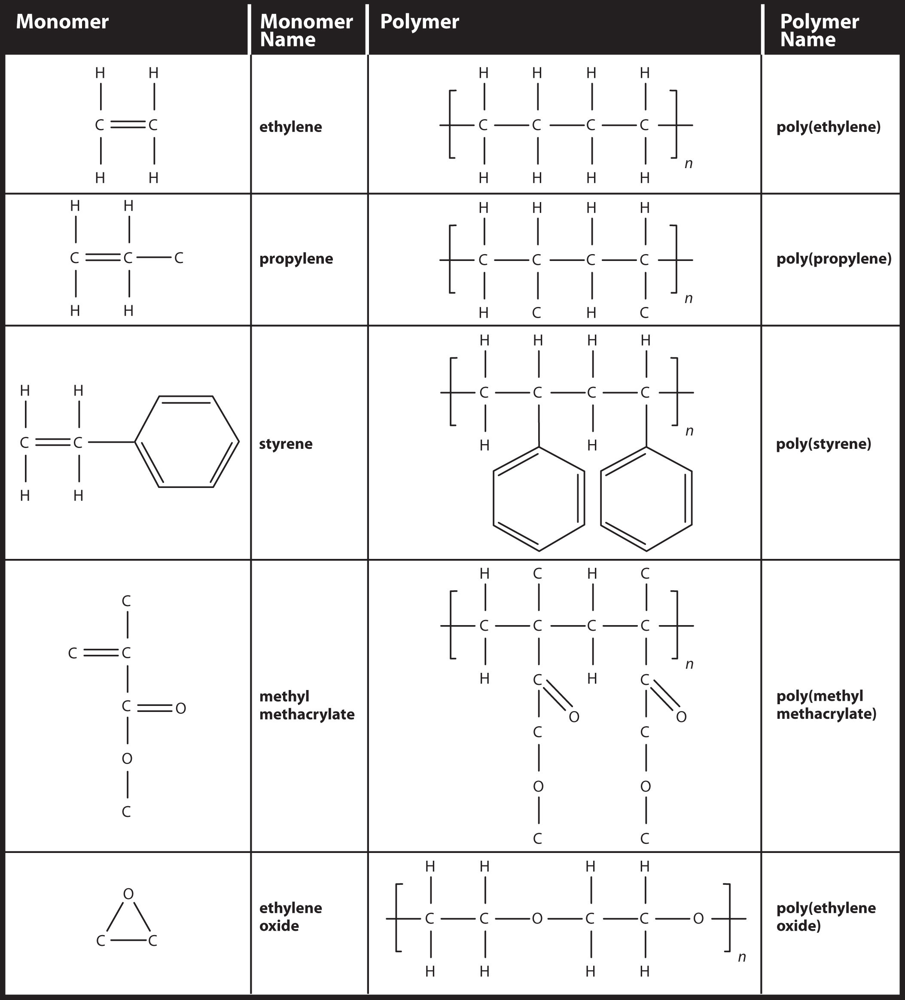

All life on Earth is ultimately based on photosynthesis—the process by which plants absorb CO2 and H2O from their environment and, in the presence of sunlight, convert those substances into a simple sugar (glucose) and ultimately starches and other building blocks of life. The net photosynthesis chemical reaction is as follows:
Oxygen is also a product of photosynthesis. Most forms of animal life (including people) depend on oxygen to breathe, which makes plants indispensible. Virtually all food sources come from plants, eaten either directly (as fruits, vegetables, or grains) or indirectly (as feedstock for meat animals such as cattle, poultry, pigs, sheep, goats, and the like). Plants are absolutely necessary for life to exist.
The net reaction for photosynthesis is misleadingly simple. A series of reactions, called light-dependent reactions, start by the absorption of light by pigments (not just chlorophyll, as commonly misunderstood) in plant cells. This is followed by a series of light-independent reactions, so named not because they happen in the dark but because they do not directly involve light; however, they involve the products of reactions stimulated by light, so they ultimately depend on light. The whole series of reactions involves many chemicals, enzymes, breaking and making chemical bonds, the transfer of electrons and H+ ions, and other chemical processes. The elucidation of the actual steps of photosynthesis—a process still unduplicated artificially—is a major achievement of modern chemistry.
Organic chemistry is the study of the chemistry of carbon compounds. Why focus on carbon? Carbon has properties that give its chemistry unparalleled complexity. It forms four covalent bonds, which give it great flexibility in bonding. It makes fairly strong bonds with itself (a characteristic called catenation), allowing for the formation of large molecules; it also forms fairly strong bonds with other elements, allowing for the possibility of a wide variety of substances. No other element demonstrates the versatility of carbon when it comes to making compounds. So an entire field of chemistry is devoted to the study of the compounds and reactivity of one element.
Because of the potential for complexity, chemists have defined a rather rigorous system to describe the chemistry of carbon. We will introduce some of that system in this chapter. Should you continue your study of chemistry beyond this text, you will find a much larger world of organic chemistry than we can cover in a single chapter.
The simplest organic compounds are those composed of only two elements: carbon and hydrogen. These compounds are called hydrocarbonsAn organic compound composed of carbon and hydrogen.. Hydrocarbons themselves are separated into two types: aliphatic hydrocarbons and aromatic hydrocarbons. Aliphatic hydrocarbonsA hydrocarbon based on chains of C atoms. are hydrocarbons based on chains of C atoms. There are three types of aliphatic hydrocarbons. AlkanesAn aliphatic hydrocarbon with only single covalent bonds. are aliphatic hydrocarbons with only single covalent bonds. AlkenesAn aliphatic hydrocarbon that contains a C–C double bond. are hydrocarbons that contain at least one C–C double bond, and alkynesAn aliphatic hydrocarbon that contains a C–C triple bond. are hydrocarbons that contain a C–C triple bond. Occasionally, we find an aliphatic hydrocarbon with a ring of C atoms; these hydrocarbons are called cycloalkanes (or cycloalkenes or cycloalkynes).
Aromatic hydrocarbonsA hydrocarbon that contains a benzene ring. have a special six-carbon ring called a benzene ring. Electrons in the benzene ring have special energetic properties that give benzene physical and chemical properties that are markedly different from alkanes. Originally, the term aromatic was used to describe this class of compounds because they were particularly fragrant. However, in modern chemistry the term aromatic denotes the presence of a six-membered ring that imparts different and unique properties to a molecule.
The simplest alkanes have their C atoms bonded in a straight chain; these are called normal alkanes. They are named according to the number of C atoms in the chain. The smallest alkane is methane:
To make four covalent bonds, the C atom bonds to four H atoms, making the molecular formula for methane CH4. The diagram for methane is misleading, however; the four covalent bonds that the C atom makes are oriented three dimensionally toward the corners of a tetrahedron. A better representation of the methane molecule is shown in Figure 16.1 "Three-Dimensional Representation of Methane".
The next-largest alkane has two C atoms that are covalently bonded to each other. For each C atom to make four covalent bonds, each C atom must be bonded to three H atoms. The resulting molecule, whose formula is C2H6, is ethane:

Propane has a backbone of three C atoms surrounded by H atoms. You should be able to verify that the molecular formula for propane is C3H8:

The diagrams representing alkanes are called structural formulasA diagram that represents how the atoms in a molecule are bonded. because they show the structure of the molecule. As molecules get larger, structural formulas become more and more complex. One way around this is to use a condensed structural formulaA listing of the atoms bonded to each C atom in a chain., which lists the formula of each C atom in the backbone of the molecule. For example, the condensed structural formula for ethane is CH3CH3, while for propane it is CH3CH2CH3. Table 16.1 "The First 10 Alkanes" gives the molecular formulas, the condensed structural formulas, and the names of the first 10 alkanes.
Table 16.1 The First 10 Alkanes
| Molecular Formula | Condensed Structural Formula | Name |
|---|---|---|
| CH4 | CH4 | methane |
| C2H6 | CH3CH3 | ethane |
| C3H8 | CH3CH2CH3 | propane |
| C4H10 | CH3CH2CH2CH3 | butane |
| C5H12 | CH3CH2CH2CH2CH3 | pentane |
| C6H14 | CH3(CH2)4CH3 | hexane |
| C7H16 | CH3(CH2)5CH3 | heptane |
| C8H18 | CH3(CH2)6CH3 | octane |
| C9H20 | CH3(CH2)7CH3 | nonane |
| C10H22 | CH3(CH2)8CH3 | decane |
Because alkanes have the maximum number of H atoms possible according to the rules of covalent bonds, alkanes are also referred to as saturated hydrocarbonsA carbon compound with the maximum possible number of H atoms in its formula..
Alkenes have a C–C double bond. Because they have less than the maximum number of H atoms possible, they are called unsaturated hydrocarbonsA carbon compound with less than the maximum possible number of H atoms in its formula.. The smallest alkene—ethene—has two C atoms and is also known by its common name ethylene:
The next largest alkene—propene—has three C atoms with a C–C double bond between two of the C atoms. It is also known as propylene:
What do you notice about the names of alkanes and alkenes? The names of alkenes are the same as their corresponding alkanes except that the ending is -ene, rather than -ane. Using a stem to indicate the number of C atoms in a molecule and an ending to represent the type of organic compound is common in organic chemistry, as we shall see.
With the introduction of the next alkene, butene, we begin to see a major issue with organic molecules: choices. With four C atoms, the C–C double bond can go between the first and second C atoms or between the second and third C atoms:

(A double bond between the third and fourth C atoms is the same as having it between the first and second C atoms, only flipped over.) The rules of naming in organic chemistry require that these two substances have different names. The first molecule is named 1-butene, while the second molecule is named 2-butene. The number at the beginning of the name indicates where the double bond originates. The lowest possible number is used to number a feature in a molecule; hence, calling the second molecule 3-butene would be incorrect. Numbers are common parts of organic chemical names because they indicate which C atom in a chain contains a distinguishing feature.
The compounds 1-butene and 2-butene have different physical and chemical properties, even though they have the same molecular formula—C4H8. Different molecules with the same molecular formula are called isomersA molecule with the same molecular formula as another molecule but a different structure.. Isomers are common in organic chemistry and contribute to its complexity.
Based on the names for the butene molecules, propose a name for this molecule.

Solution
With five C atoms, we will use the pent- stem, and with a C–C double bond, this is an alkene, so this molecule is a pentene. In numbering the C atoms, we use the number 2 because it is the lower possible label. So this molecule is named 2-pentene.
Test Yourself
Based on the names for the butene molecules, propose a name for this molecule.

Answer
3-hexene
Alkynes, with a C–C triple bond, are named similarly to alkenes except their names end in -yne. The smallest alkyne is ethyne, which is also known as acetylene:
Propyne has the structure

With butyne, we need to start numbering the position of the triple bond, just as we did with alkenes:
Aromatic compounds contain the benzene unit. Benzene itself is composed of six C atoms in a ring, with alternating single and double C–C bonds:
The alternating single and double C–C bonds give the benzene ring a special stability, and it does not react like an alkene as might be suspected. Benzene has the molecular formula C6H6; in larger aromatic compounds, a different atom replaces one or more of the H atoms.
As fundamental as hydrocarbons are to organic chemistry, their properties and chemical reactions are rather mundane. Most hydrocarbons are nonpolar because of the close electronegativities of the C and H atoms. As such, they dissolve only sparingly in H2O and other polar solvents. Small hydrocarbons, such as methane and ethane, are gases at room temperature, while larger hydrocarbons, such as hexane and octane, are liquids. Even larger hydrocarbons are solids at room temperature and have a soft, waxy consistency.
Hydrocarbons are rather unreactive, but they do participate in some classic chemical reactions. One common reaction is substitution with a halogen atom by combining a hydrocarbon with an elemental halogen. Light is sometimes used to promote the reaction, such as this one between methane and chlorine:
Halogens can also react with alkenes and alkynes, but the reaction is different. In these cases, the halogen reacts with the C–C double or triple bond and inserts itself onto each C atom involved in the multiple bonds. This reaction is called an addition reactionThe reaction of a halogen molecule across a C–C double or triple bond.. One example is

The reaction conditions are usually mild; in many cases, the halogen reacts spontaneously with an alkene or an alkyne.
Hydrogen can also be added across a multiple bond; this reaction is called a hydrogenation reactionThe reaction of hydrogen across a C–C double or triple bond, usually in the presence of a catalyst.. In this case, however, the reaction conditions may not be mild; high pressures of H2 gas may be necessary. A platinum or palladium catalyst is usually employed to get the reaction to proceed at a reasonable pace:
By far the most common reaction of hydrocarbons is combustion, which is the combination of a hydrocarbon with O2 to make CO2 and H2O. The combustion of hydrocarbons is accompanied by a release of energy and is a primary source of energy production in our society (Figure 16.2 "Combustion"). The combustion reaction for gasoline, for example, which can be represented by C8H18, is as follows:
2C8H18 + 25O2 → 16CO2 + 18H2O + ~5060 kJDefine hydrocarbon. What are the two general types of hydrocarbons?
What are the three different types of aliphatic hydrocarbons? How are they defined?
Indicate whether each molecule is an aliphatic or an aromatic hydrocarbon; if aliphatic, identify the molecule as an alkane, an alkene, or an alkyne.


Indicate whether each molecule is an aliphatic or an aromatic hydrocarbon; if aliphatic, identify the molecule as an alkane, an alkene, or an alkyne.


Indicate whether each molecule is an aliphatic or an aromatic hydrocarbon; if aliphatic, identify the molecule as an alkane, an alkene, or an alkyne.


Indicate whether each molecule is an aliphatic or an aromatic hydrocarbon; if aliphatic, identify the molecule as an alkane, an alkene, or an alkyne.
Name and draw the structural formulas for the four smallest alkanes.
Name and draw the structural formulas for the four smallest alkenes.
What does the term aromatic imply about an organic molecule?
What does the term normal imply when used for alkanes?
Explain why the name 1-propene is incorrect. What is the proper name for this molecule?
Explain why the name 3-butene is incorrect. What is the proper name for this molecule?
Name and draw the structural formula of each isomer of pentene.
Name and draw the structural formula of each isomer of hexyne.
Write a chemical equation for the reaction between methane and bromine.
Write a chemical equation for the reaction between ethane and chlorine.
Draw the structure of the product of the reaction of bromine with propene.
Draw the structure of the product of the reaction of chlorine with 2-butene.
Draw the structure of the product of the reaction of hydrogen with 1-butene.
Draw the structure of the product of the reaction of hydrogen with 2-pentene.
Write the balanced chemical equation for the combustion of heptane.
Write the balanced chemical equation for the combustion of nonane.
an organic compound composed of only carbon and hydrogen; aliphatic hydrocarbons and aromatic hydrocarbons

Aromatic means that the molecule has a benzene ring.
The 1 is not necessary. The name of the compound is simply propene.

CH4 + Br2 → CH3Br + HBr
C7H16 + 11O2 → 7CO2 + 8H2O
Not all hydrocarbons are straight chains. Many hydrocarbons have branches of C atoms attached to a chain. These branched alkanes are isomers of straight-chain alkanes having the same number of C atoms. However, they are different compounds with different physical and chemical properties. As such, they need different names. How do we name branched hydrocarbonsA carbon compound that is not a straight chain but has branches attached to the longest chain.?
There are a series of rules for naming branched alkanes (and, ultimately, for all organic compounds). These rules make up the system of nomenclatureThe rules of naming in organic chemistry. for naming organic molecules. Worldwide, the International Union of Pure and Applied Chemistry (IUPAC) has developed the system of nomenclature for organic compounds. So these rules are sometimes called the IUPAC rules of nomenclature. By learning and applying these rules, you can name any organic compound when given its structure or determine the unique structure of a molecule from its name. You have already learned the basics of nomenclature—the names of the first 10 normal hydrocarbons. Here, we will add some steps to the procedure so you can name branched hydrocarbons.
First, given the structure of an alkane, identify the longest continuous chain of C atoms. Note that the longest chain may not be drawn in a straight line. The longest chain determines the parent name of the hydrocarbon. For example, in the molecule

the longest chain of carbons has six C atoms. Therefore, it will be named as a hexane. However, in the molecule

the longest chain of C atoms is not six, but seven, as shown. So this molecule will be named as a heptane.
The next step is to identify the branches, or substituentsA branch off a main chain in a hydrocarbon., on the main chain. The names of the substituents, or alkyl groups, are derived from the names of the parent hydrocarbons; however, rather than having the ending -ane, the substituent name has the ending -yl. Table 16.2 "Substituent Names" lists the substituent names for the five smallest substituents.
Table 16.2 Substituent Names
| Substituent Formula | Number of C Atoms | Name of Substituent |
|---|---|---|
| CH3 | 1 | methyl- |
| CH3CH2 | 2 | ethyl- |
| CH3CH2CH2 | 3 | propyl- |
| CH3CH2CH2CH2 | 4 | butyl- |
| CH3CH2CH2CH2CH2 | 5 | pentyl- |
| and so forth | and so forth | and so forth |
In naming the branched hydrocarbon, the name of the substituent is combined with the parent name of the hydrocarbon without spaces. However, there is likely one more step. The longest chain of the hydrocarbon must be numbered, and the numerical position of the substituent must be included to account for possible isomers. As with double and triple bonds, the main chain is numbered to give the substituent the lowest possible number. For example, in this alkane

the longest chain is five C atoms long, so it is a pentane. There is a one-carbon substituent on the third C atom, so there is a methyl group at position 3. We indicate the position using the number, which is followed by a hyphen, the substituent name, and the parent hydrocarbon name—in this case, 3-methylpentane. That name is specific to that particular hydrocarbon and no other molecule. Organic chemistry nomenclature is very specific!
It is common to write the structural formula of a hydrocarbon without the H atoms, for clarity. So we can also represent 3-methylpentane as
where it is understood that any unwritten covalent bonds are bonds with H atoms. With this understanding, we recognize that the structural formula for 3-methylpentane refers to a molecule with the formula of C6H14.
Name this molecule.

Solution
The longest continuous carbon chain has seven C atoms, so this molecule will be named as a heptane. There is a two-carbon substituent on the main chain, which is an ethyl group. To give the substituent the lowest numbering, we number the chain from the right side and see that the substituent is on the third C atom. So this hydrocarbon is 3-ethylheptane.
Test Yourself
Name this molecule.

Answer
2-methylpentane
Branched hydrocarbons may have more than one substituent. If the substituents are different, then give each substituent a number (using the smallest possible numbers) and list the substituents in alphabetical order, with the numbers separated by hyphens and with no spaces in the name. So the molecule

is 3-ethyl-2-methylpentane.
If the substituents are the same, then use the name of the substituent only once, but use more than one number, separated by a comma. Also, put a numerical prefix before the substituent name that indicates the number of substituents of that type. The numerical prefixes are listed in Table 16.3 "Numerical Prefixes to Use for Multiple Substituents". The number of the position values must agree with the numerical prefix before the substituent.
Table 16.3 Numerical Prefixes to Use for Multiple Substituents
| Number of Same Substituent | Numerical Prefix |
|---|---|
| 2 | di- |
| 3 | tri- |
| 4 | tetra- |
| 5 | penta- |
| and so forth | and so forth |
Consider this molecule:
The longest chain has four C atoms, so it is a butane. There are two substituents, each of which consists of a single C atom; they are methyl groups. The methyl groups are on the second and third C atoms in the chain (no matter which end the numbering starts from), so we would name this molecule 2,3-dimethylbutane. Note the comma between the numbers, the hyphen between the numbers and the substituent name, and the presence of the prefix di- before the methyl. Other molecules—even with larger numbers of substituents—can be named similarly.
Name this molecule.

Solution
The longest chain has seven C atoms, so we name this molecule as a heptane. We find two one-carbon substituents on the second C atom and a two-carbon substituent on the third C atom. So this molecule is named 3-ethyl-2,2-dimethylheptane.
Test Yourself
Name this molecule.
Answer
4,4,5-tripropyloctane
Alkenes and alkynes are named in a similar fashion. The biggest difference is that when identifying the longest carbon chain, it must contain the C–C double or triple bond. Furthermore, when numbering the main chain, the double or triple bond gets the lowest possible number. This means that there may be longer or higher-numbered substituents than may be allowed if the molecule were an alkane. For example, this molecule
is 2,4-dimethyl-3-heptene (note the number and the hyphens that indicate the position of the double bond).
Name this molecule.
Solution
The longest chain that contains the C–C triple bond has six C atoms, so this is a hexyne molecule. The triple bond starts at the third C atom, so this is a 3-hexyne. Finally, there are two methyl groups on the chain; to give them the lowest possible number, we number the chain from the left side, giving the methyl groups the second position. So the name of this molecule is 2,2-dimethyl-3-hexyne.
Test Yourself
Name this molecule.

Answer
2,3,4-trimethyl-2-pentene
Once you master naming hydrocarbons from their given structures, it is rather easy to draw a structure from a given name. Just draw the parent chain with the correct number of C atoms (putting the double or triple bond in the right position, as necessary) and add the substituents in the proper positions. If you start by drawing the C atom backbone, you can go back and complete the structure by adding H atoms to give each C atom four covalent bonds. From the name 2,3-dimethyl-4-propyl-2-heptene, we start by drawing the seven-carbon parent chain with a double bond starting at the third carbon:
We add to this structure two one-carbon substituents on the second and third C atoms:
We finish the carbon backbone by adding a three-carbon propyl group to the fourth C atom in the parent chain:

If we so choose, we can add H atoms to each C atom to give each carbon four covalent bonds, being careful to note that the C atoms in the double bond already have an additional covalent bond. (How many H atoms do you think are required?There will need to be 24 H atoms to complete the molecule.)
Draw the carbon backbone for 2,3,4-trimethylpentane.
Solution
First, we draw the five-carbon backbone that represents the pentane chain:
According to the name, there are three one-carbon methyl groups attached to the second, the third, and the fourth C atoms in the chain. We finish the carbon backbone by putting the three methyl groups on the pentane main chain:
Test Yourself
Draw the carbon backbone for 3-ethyl-6,7-dimethyl-2-octene.
Answer

Naming substituted benzene molecules is straightforward. If there is only one substituent, the substituent is named as a side chain on a benzene molecule, like this:
If there are two or more substituents on a benzene molecule, the relative positions must be numbered, just as an aliphatic chain of C atoms is numbered. The substituent that is first alphabetically is assigned position 1, and the ring is numbered in a circle to give the other substituents the lowest possible number(s).
If a benzene ring is treated as a substituent, it is given the name phenyl-. The following molecule is 3-phenylpentane:

where the H atoms have been omitted for clarity.
How does a branched hydrocarbon differ from a normal hydrocarbon?
How does a substituent get its unique name?
Name this molecule.

Name this molecule.

Name this molecule.

Name this molecule.

Name this molecule.
Name this molecule.

Name this molecule.

Name this molecule.

Name this molecule.
Name this molecule.

Draw the carbon backbone for each molecule.
Draw the carbon backbone for each molecule.
Draw the carbon backbone for each molecule.
Draw the carbon backbone for each molecule.
The name 2-ethylhexane is incorrect. Draw the carbon backbone and write the correct name for this molecule.
The name 3-butyl-7-methyloctane is incorrect. Draw the carbon backbone and write the correct name for this molecule.
A branched hydrocarbon does not have all of its C atoms in a single row.
3-methyl-2-hexene
4,4-dimethyl-1-pentene
2,4-dimethyl-2-pentene
3,4-diethyloctane
1-bromo-4-chlorobenzene
A functional groupA collection of atoms or bonds with certain characteristic reactions. is any collection of atoms and/or bonds with certain characteristic chemical reactions. We have already seen two functional groups: the C–C double bond and the C–C triple bond. They undergo certain characteristic chemical reactions—for example, the addition of a halogen across the multiple bond.
The presence of a halogen atom (F, Cl, Br, or I; also, X is used to represent any halogen atom) is one of the simplest functional groups. Organic compounds that contain a halogen atom are called alkyl halidesAn organic compound that contains a halogen atom.. We have already seen some examples of alkyl halides when the addition of halogens across double and triple bonds was introduced in Chapter 16 "Organic Chemistry", Section 16.2 "Branched Hydrocarbons"; the products of these reactions were alkyl halides.
A simple alkyl halide can be named like an ionic salt, first by stating the name of the parent alkane as a substituent group (with the -yl suffix) and then the name of the halogen as if it were the anion. So CH3Cl has the common name of methyl chloride, while CH3CH2Br is ethyl bromide and CH3CH2CH2I is propyl iodide. However, this system is not ideal for more complicated alkyl halides.
The systematic way of naming alkyl halides is to name the halogen as a substituent, just like an alkyl group, and use numbers to indicate the position of the halogen atom on the main chain. The name of the halogen as a substituent comes from the stem of the element’s name plus the ending -o, so the substituent names are fluoro-, chloro-, bromo- and iodo-. If there is more than one of a certain halogen, we use numerical prefixes to indicate the number of each kind, just as with alkyl groups. For example, this molecule
is 2-bromobutane, while this molecule

is 2,3-dichloropentane. If alkyl groups are present, the substituents are listed alphabetically. Numerical prefixes are ignored when determining the alphabetical ordering of substituent groups.
Name this molecule.

Solution
The longest carbon chain has five C atoms, so the molecule is a pentane. There are two chlorine substituents located on the second and third C atoms, with a one-carbon methyl group on the third C atom as well. The correct name for this molecule is 2,3-dichloro-3-methylpentane.
Test Yourself
Name this molecule.

Answer
1,1,2-tribromopropane
Another simple functional group is the covalently bonded OH group. This is the alcoholAn organic compound that contains an OH functional group. functional group. It is not the hydroxide ion; rather than being present as a negatively charged species, in organic chemistry it is a covalently bonded functional group.
Like alkyl halides, alcohols have a common naming system and a more formal system. The common system is similar to that of alkyl halides: name the alkyl group attached to the OH group, ending with the suffix -yl, and add the word alcohol as a second word. So CH3OH is methyl alcohol; CH3CH2OH is ethyl alcohol, and CH3CH2CH2OH is propyl alcohol.
As with alkyl halides, though, this system is limited (although for smaller alcohols, it is very common in everyday usage). The formal system of naming uses the name of the hydrocarbon containing the OH group and having the correct number of C atoms, dropping the final -e of the name and appending the suffix -ol. Thus CH3OH is methanol and CH3CH2OH is ethanol. For larger alcohol molecules, we use a number to indicate the position of the OH group on the longest carbon chain, similar to the number needed for alkenes and alkynes. Again, the carbon chain is numbered to give the OH group the lowest number, no matter how large the other numbers are. So CH3CH2CH2OH is 1-propanol, while CH3CHOHCH3 is 2-propanol. (A common component in many medicine cabinets, 2‑propanol is also known as isopropanol or isopropyl alcohol [Figure 16.3 "Isopropyl Alcohol"]).
Figure 16.3 Isopropyl Alcohol
What you find labeled isopropyl alcohol in a medicine cabinet is more formally called 2-propanol.
Source: Photo courtesy of Craig Spurrier, http://en.wikipedia.org/wiki/File:Rubbing_alcohol.JPG.
Another acceptable way of naming an alcohol—especially a more complicated molecule—is to name the OH group as the hydroxy substituent and give it a numerical position like an alkyl group or a halogen atom. Thus 2-propanol would be called 2-hydroxypropane by this convention.
Name this molecule as an alcohol and as a substituted alkane.

Solution
The longest carbon chain containing the OH group has four C atoms, so the parent hydrocarbon is butane. Because the OH group is on the first C atom, it is 1-butanol. There is a methyl group on the second C atom, as well as a Cl atom, so the formal name for this alcohol is 2-chloro-2-methyl-1-butanol. If naming the alcohol group as a substituent, it would be 2-chloro-1-hydroxy-2-methylbutane.
Test Yourself
Name this molecule as an alcohol and as a substituted alkane.
Answer
2,2,2-trichloroethanol; 2,2,2-trichloro-1-hydroxyethane
Most alkyl halides are insoluble in H2O. Smaller alcohols, however, are very soluble in H2O because these molecules can engage in hydrogen bonding with H2O molecules. For larger molecules, however, the polar OH group is overwhelmed by the nonpolar alkyl part of the molecule. While methanol is soluble in H2O in all proportions, only about 2.6 g of pentanol will dissolve in 100 g of H2O. Larger alcohols have an even lower solubility in H2O.
One reaction common to alcohols and alkyl halides is eliminationThe removal of an HZ (Z = halogen, OH) from an alkyl halide or an alcohol., the removal of the functional group (either X or OH) and an H atom from an adjacent carbon. The general reaction can be written as follows:

where Z represents either the X or the OH group. The biggest difference between elimination in alkyl halides and elimination in alcohols is the identity of the catalyst: for alkyl halides, the catalyst is a strong base; for alcohols, the catalyst is a strong acid. For compounds in which there are H atoms on more than one adjacent carbon, a mixture of products results.
Predict the organic product(s) of this reaction.

Solution
Under these conditions, an HOH (otherwise known as H2O) molecule will be eliminated, and an alkene will be formed. It does not matter which adjacent carbon loses the H atom; in either case the product will be

which is propene.
Test Yourself
Predict the organic product(s) of this reaction.
Answer
1-butene and 2-butene
Define functional group and give two examples.
What is elimination? How does it differ for alkyl halides and alcohols?
Name this molecule.
Name this molecule.

Name this molecule.
Name this molecule.

Name this molecule.

Name this molecule.
Name this molecule.
Name this molecule.

Predict the product(s) of this elimination reaction.
Predict the product(s) of this elimination reaction.

Predict the product(s) of this elimination reaction.
Predict the product(s) of this elimination reaction.

a group of atoms with a certain reactivity; halogen atoms and alcohol groups (answers will vary).
2-bromobutane
2-chloro-3-fluoro-4-methylheptane
2-methyl-2-propanol
4-octanol
2-pentene
2-hexene and 3-hexene
There are other functional groups that contain O atoms. Before we introduce them, we define the carbonyl groupA functional group formed when an O atom and a C atom are joined with a double bond., which is formed when an O atom and a C atom are joined by a double bond:
The other two bonds on the C atom are attached to other atoms. It is the identities of these other atoms that define what specific type of compound an organic molecule is.
If one bond of the carbonyl group is made to an H atom, then the molecule is classified as an aldehydeA compound that has a carbonyl functional group at the end of a chain of C atoms.. (If there are two H atoms, there is only 1 C atom.) When naming aldehydes, the main chain of C atoms must include the carbon in the carbonyl group, which is numbered as position 1 in the carbon chain. The parent name of the hydrocarbon is used, but the suffix -al is appended. (Do not confuse -al with -ol, which is the suffix used for alcohols.) So we have

Methanal has a common name with which you may be familiar: formaldehyde. The main thing to note about aldehydes is that the carbonyl group is at the end of a carbon chain.
A carbonyl group in the middle of a carbon chain implies that both remaining bonds of the carbonyl group are made to C atoms. This type of molecule is called a ketoneA compound that has a carbonyl group in the middle of a carbon chain.. Despite the fact that aldehydes and ketones have the same carbonyl group, they have different chemical and physical properties and are properly grouped as two different types of compounds. The smallest ketone has three C atoms in it. When naming a ketone, we take the name of the parent hydrocarbon and change the suffix to -one:

The common name for propanone is acetone. With larger ketones, we must use a number to indicate the position of the carbonyl group, much like a number is used with alkenes and alkynes:

There is another way to name ketones: name the alkyl groups that are attached to the carbonyl group and add the word ketone to the name. So propanone can also be called dimethyl ketone, while 2-butanone is called methyl ethyl ketone.
Draw the structure of 2-pentanone.
Solution
This molecule has five C atoms in a chain, with the carbonyl group on the second C atom. Its structure is as follows:
Test Yourself
Draw the structure of methyl butyl ketone.
Answer
The combination of a carbonyl functional group and an OH group makes the carboxyl groupA functional group composed of a carbonyl group and an OH group..
Molecules with a carboxyl group are called carboxylic acidsA molecule with a carboxyl group.. As with aldehydes, the functional group in carboxylic acids is at the end of a carbon chain. Also as with aldehydes, the C atom in the functional group is counted as one of the C atoms that defines the parent hydrocarbon name. To name carboxylic acids, the parent name of the hydrocarbon is used, but the suffix -oic acid is added:

Methanoic acid and ethanoic acid are also called formic acid and acetic acid, respectively. Formic acid is the compound that makes certain ant bites sting, while acetic acid is the active substance in vinegar.
How acidic are carboxylic acids? It turns out that they are not very acidic. No carboxylic acid is on the list of strong acids (Table 12.2 "Strong Acids and Bases"). (For more information about strong acids, see Chapter 12 "Acids and Bases", Section 12.4 "Strong and Weak Acids and Bases and Their Salts".) This means that all carboxylic acids are weak acids. A 1 M solution of formic acid is only about 1.3% dissociated into H+ ions and formate ions, while a similar solution of acetic acid is ionized by about only 0.4%. Some carboxylic acids are stronger—for example, trichloroacetic acid is about 45% dissociated in aqueous solution. But no carboxylic acid approaches the 100% dissociation amount required by the definition of a strong acid.
As their name suggests, however, carboxylic acids do act like acids in the presence of bases. The H atom in the carboxyl group comes off as the H+ ion, leaving a carboxylateA negatively charged ion derived from a carboxylic acid. anion:
Carboxylate ions are named from the acid name: the -oic acid is replaced with -oate to name the ion.
Complete the chemical reaction. Can you name the carboxylate ion formed?
Solution
The OH– ion removes the H atom that is part of the carboxyl group:
The carboxylate ion, which has the condensed structural formula CH3CO2−, is the ethanoate ion, but it is commonly called the acetate ion.
Test Yourself
Complete the chemical reaction. Can you name the carboxylate ion formed?

Answer
The anion is the methanoate ion, which is commonly called the formate ion.
One reaction to consider is that of a carboxylic acid and an alcohol. When combined under the proper conditions, a water molecule will be removed, and the remaining pieces will combine to form a new functional group—the esterA functional group made by combining a carboxylic acid with an alcohol. functional group:

Note how the acid molecule contributes one alkyl side (represented by R), while the alcohol contributes the other side (represented by R′). Esters are named using the alkyl group name from the alcohol plus the carboxylate name from the acid—for example, the molecule

is called methyl propanoate.
Esters are very interesting compounds, in part because many have very pleasant odors and flavors. (Remember, never taste anything in the chemistry lab!) Many esters occur naturally and contribute to the odor of flowers and the taste of fruits. Other esters are synthesized industrially and are added to food products to improve their smell or taste; it is likely that if you eat a product whose ingredients include artificial flavorings, those flavorings are esters. Here are some esters and their uses, thanks to their odors, flavors, or both:
| Ester | Tastes/Smells Like | Ester | Tastes/Smells Like | |
|---|---|---|---|---|
| allyl hexanoate | pineapple | isobutyl formate | raspberry | |
| benzyl acetate | pear | isobutyl acetate | pear | |
| butyl butanoate | pineapple | methyl phenylacetate | honey | |
| ethyl butanoate | banana | nonyl caprylate | orange | |
| ethyl hexanoate | pineapple | pentyl acetate | apple | |
| ethyl heptanoate | apricot | propyl ethanoate | pear | |
| ethyl pentanoate | apple | propyl isobutyrate | rum |
Finally, the etherA functional group that has an O atom attached to two organic groups. functional group is an O atom that is bonded to two organic groups:
R—O—R′The two R groups may be the same or different. Naming ethers is like the alternate way of naming ketones. In this case, the R groups are named sequentially, and the word ether is appended. The molecule
CH3OCH3is dimethyl ether, while
CH3OCH2CH3is methyl ethyl ether. Diethyl ether, another ether, was once used as an anesthetic, but its flammability and toxicity caused it to fall out of favor. Smaller ether molecules that are liquids at room temperature are common solvents for organic chemical reactions.
Name a similarity between the functional groups found in aldehydes and ketones. Can you name a difference between them?
Explain how a carboxylic acid is used to make an ester.
Name each molecule.

Name each molecule.
Name each molecule.

Name each molecule.


Name this molecule.
Name this molecule.

Give an alternate but acceptable name to the molecule in Exercise 3b.
Give an alternate but acceptable name to the molecule in Exercise 4b.
Complete this chemical reaction.

Complete this chemical reaction.
The drug known as aspirin has this molecular structure:

Identify the functional group(s) in this molecule.
The drug known as naproxen sodium is the sodium salt of this molecule:
(The extra H atoms are omitted for clarity.) Identify the functional group(s) in this molecule.
Identify the ester made by reacting these molecules.
Identify the ester made by reacting these molecules.
They both have a carbonyl group, but an aldehyde has the carbonyl group at the end of a carbon chain, and a ketone has the carbonyl group in the middle.
ethyl propyl ether
ethyl methyl ketone
H2O + KCH3CH2CO2
acid, ester, and aromatic (benzene ring)
propyl propionate
There are some common—and important—functional groups that contain elements other than oxygen. In this section, we will consider three of them.
An amineAn organic derivative of ammonia. is an organic derivative of ammonia (NH3). In amines, one or more of the H atoms in NH3 is substituted with an organic group. A primary amine has one H atom substituted with an R group:

A secondary amine has two H atoms substituted with R groups:

A tertiary amine has all three H atoms substituted with R group:
Naming simple amines is straightforward: name the R groups as substituents and then add the suffix -amine, using numerical suffixes on the substituent names as necessary. This amine

is diethylamine (the H atoms on the C atoms are omitted for clarity), while this amine
is ethyldipropylamine.
Name this amine.
Solution
This amine has a methyl group, an ethyl group, and a propyl group. Listing the names in alphabetical order, this amine is ethylmethylpropylamine.
Test Yourself
Name this amine.
Answer
triethylamine
As with NH3, the N atom in amines can accept a proton onto the lone electron pair on the N atom. That is, amines act as Brønsted-Lowry bases (i.e., proton acceptors):

(For more information on Brønsted-Lowry bases, see Chapter 12 "Acids and Bases", Section 12.2 "Brønsted-Lowry Acids and Bases".) The amine becomes an ion, the organic counterpart of the ammonium (NH4+) ion.
Because no amine is presented in Table 12.2 "Strong Acids and Bases", all amines are weak bases. The weakness of amines is about as the same as that for carboxylic acids. N-containing organic compounds are very common in nature, and they all act as weak bases. Some of these compounds have rather complicated structures. Figure 16.4 "Some Naturally Occurring N-Containing Compounds" shows some N-containing substances that you may recognize.
Figure 16.4 Some Naturally Occurring N-Containing Compounds

Nitrogen-containing compounds occur frequently in nature. Here are some that you might encounter in the course of your everyday life.
An amideA functional group that is the combination of the amine and carbonyl functional groups. functional group is a combination of an amine group and a carbonyl group:

Amides are actually formed by bringing together an amine-containing molecule and a carboxylic acid-containing molecule. A molecule of H2O is lost, much like when an ester forms:

The bond between the N of the amine group and the C of the carbonyl group is called an amide bondThe bond between the N atom and the C atom in an amide.. Amide bonds are particularly important in biological molecules called proteins, which are composed of strings of amino acids—molecules that have an amine group and a carboxylic acid group in them. The amine group on one amino acid reacts with the carboxylic acid group of another amino acid, making a chain held together by amide bonds. We will consider proteins later in this chapter.
Draw the structure of the amide formed by the combination of ethylamine and butanoic acid.
Solution
The structures of ethylamine and butanoic acid are as follows:

When they come together to make an amide, an H2O molecule is lost, and the N of the amine group bonds to the C of the carboxyl group. The resulting molecule is as follows:

Test Yourself
Draw the structure of the amide formed by the combination of methylamine and formic acid.
Answer

Sulfur is below oxygen on the periodic table, and it occasionally shows some similar chemistry. One similarity is that an S atom can take the place of an O atom in an alcohol, to make a molecule that looks like this:
R–SHThe sulfur analog of an alcohol is called a thiolThe sulfur analog of an alcohol.. The formal way of naming a thiol is similar to that of alcohols, except that instead of using the suffix -ol, you use -thiol as the suffix. The following illustrates thiol nomenclature:
An older system uses the word mercaptan in naming simple thiols, much like the word alcohol is used with small alcohols. These thiols can also be named like this:
Many thiols have strong, objectionable odors; indeed, the spray from skunks is composed of thiols and is detectable by the human nose at concentrations less than 10 ppb. Because natural gas is odorless, thiols are intentionally added to natural gas—at very low levels, of course—so that gas leaks can be more easily detected. Not all thiols have objectionable odors; this thiol is responsible for the odor of grapefruit:

One amino acid that is a thiol is cysteine:
Cysteine plays an important role in protein structure. If two cysteine amino acids in a protein chain approach each other, they can be oxidized, and a S–S bond (also known as a disulfide bond) is formed:
R–SH + HS–R → R–S–S–Rwhere the R group is the rest of the cysteine molecule. The disulfide bond is strong enough to fix the position of the two cysteine groups, thus imposing a structure on the protein. Hair is composed of about 5% cysteine, and the breaking and remaking of disulfide bonds between cysteine units is the primary mechanism behind straightening and curling hair (hair “perms”).
The text mentioned cysteine, an amino acid. Amino acids are the fundamental building blocks of proteins, a major biological component. Proteins are a necessary part of the diet; meat, eggs, and certain vegetables such as beans and soy are good sources of protein and amino acids.
All life on Earth—from the lowliest single-celled organism to humans to blue whales—relies on proteins for life, so all life on Earth is dependent on amino acids. The human body contains 20 different amino acids (curiously, other organisms may have a different number of amino acids). However, not all of them must be obtained from the diet. The body can synthesize 12 amino acids. The other 8 must be obtained from the diet. These 8 amino acids are called the essential amino acids. Daily requirements range from 4 mg per kilogram of body weight for tryptophan to 40 mg per kilogram of body weight for leucine. Infants and children need a greater mass per kg of body weight to support their growing bodies; also, the number of amino acids that are considered essential for infants and children is greater than for adults due to the greater protein synthesis associated with growth.
Because of the existence of essential amino acids, a diet that is properly balanced in protein is necessary. Rice and beans, a very popular food dish in Latin cuisines, actually provides all the essential amino acids in one dish; without one component, the dish would be nutritionally incomplete. Corn (maize) is the most-grown grain crop in the world, but an overreliance on it as a primary food source deprives people of lysine and tryptophan, which are two essential amino acids. (Indeed, it is now widely accepted that the disappearance of certain native American groups was largely due to the overuse of corn as the staple food.) People on restricted diets—whether out of necessity or by choice (e.g., vegetarians)—may be missing the proper amount of an essential amino acid, so it is important to vary the diet when possible to ensure ingestion of a wide range of protein sources.
What are the structure and name of the smallest amine?
What are the structure and name of the smallest thiol?
Identify each compound as a primary, secondary, or tertiary amine.


Identify each compound as a primary, secondary, or tertiary amine.
Write the chemical reaction between each amine in Exercise 3 and HCl.
Write the chemical reaction between each amine in Exercise 4 and HNO3.
Name each amine.
Name each amine.

A peptide is a short chain of amino acids connected by amide bonds. How many amide bonds are present in this peptide?

How many amide bonds are present in this peptide? (See Exercise 9 for the definition of a peptide.)

Draw the backbone structure of the amide formed by reacting propylamine with propanoic acid.
Draw the backbone structure of the amide formed by reacting hexylamine with ethanoic acid.
Name each thiol using the -thiol suffix.

Name each thiol in Exercise 13 with the mercaptan label.
One component of skunk spray is 3-methyl-1-butanethiol. Draw its structure. (The 1 indicates the position of the S atom.)
An S–S bond can be fairly easily broken into proteins, yielding two lone cysteine units in a protein chain. Is this process an oxidation or a reduction? Explain your answer.
CH3NH2; methylamine
two

Among other applications, organic chemistry has had a huge impact on the development of modern materials called polymers. Many objects in daily life are composed of polymers; curiously, so are several important biological materials.
Consider a molecule with a double bond, such as ethylene:
Imagine the bond between the carbons opening up and attacking another ethylene molecule:

Now imagine further that the second ethylene molecule’s double bond opens up and attacks a third ethylene molecule, which also opens up its double bond and attacks a fourth ethylene molecule, and so forth. The end result is long, virtually endless molecule:

This long, almost nonstop molecule is called a polymerA long molecule made of hundreds or thousands of repeating units. (from the Greek meaning “many parts”). The original part—ethylene—is called the monomerThe repeated unit of a polymer. (meaning “one part”). The process of making a polymer is called polymerizationThe process of making a polymer.. A polymer is an example of a macromolecule, the name given to a large molecule.
Simple polymers are named after their monomers; the ethylene polymer is formally called poly(ethylene), although in common use, the names are used without parentheses: polyethylene. Because adding one monomer to another forms this polymer, polyethylene is an example of a type of polymer called addition polymers. Figure 16.5 "Some Monomers and Their Addition Polymers" lists some addition polymers and their monomers. One of them, poly(ethylene oxide), results not from the opening of a double bond but the opening of a ring in the monomer; the concept of bonding with other monomers, however, is the same.
Figure 16.5 Some Monomers and Their Addition Polymers
Draw the polymer that results from the polymerization of tetrafluoroethylene.

Solution
In the case of this monomer, the double bond opens up and joins to other monomers, just as with ethylene. The polymer that is made has this structure:
Test Yourself
Draw the polymer that results from the polymerization of vinyl chloride.

Answer

Another type of polymer is the condensation polymer, which is a polymer made when two different monomers react together and release some other small molecule as a product. We have already seen an example of this, in the formation of an amide bond:

Here, H2O is released when the ends of the molecules react to form a polymer.
Related to condensation polymers are the copolymers, polymers made from more than one type of monomer. For example, ethylene and propylene can be combined into a polymer that is a mixture of the two monomers. A common form of synthetic rubber called styrene butadiene rubber (SBR) is made from two monomers: styrene and butadiene:
The physical and chemical properties of polymers vary widely, based on their monomers, structures, and additives. Among the other properties that can be modified based on these factors include solubility in H2O and other solvents, melting point, flammability, color, hardness, transparency, film thickness, wetability, surface friction, moldability, and particle size—the list goes on.
The uses of polymers are almost too numerous to consider. Anything that you might describe as “plastic” is likely a polymer. Polymers are used to make everything from toothbrushes to computer cases to automobile parts. Many epoxy-based adhesives are condensation polymers that adhere strongly to other surfaces. Polyurethane paints and coatings are polymers, as are the polyester fabrics used to make clothing. Nylon, Dacron, and Mylar are polymers (in fact, both Dacron and Mylar are forms of polyethylene terephthalate [PET]). The product known as Saran Wrap was originally constructed from Saran, a name for poly(vinylidene chloride), which was relatively impervious to oxygen and could be used as a barrier to help keep food fresh. (It has since been replaced with polyethylene, which is not as impervious to atmospheric oxygen.) Poly(vinyl chloride) is the third-most produced polymer [after poly(ethylene) and poly(propylene)] and is used to make everything from plastic tubing to automobile engine parts, water pipes to toys, flooring to waterbeds and pools.
All the polymers we have considered so far are based on a backbone of (largely) carbon. There is another class of polymers based on a backbone of Si and O atoms; these polymers are called siliconesA polymer based on a silicon and oxygen backbone.. The Si atoms have organic groups attached to them, so these polymers are still organic. One example of a silicone is as follows:
Silicones are used to make oils and lubricants; they are used as sealants for glass objects (such as aquariums) and films for waterproofing objects. Solid silicones are heat resistant and rubbery and are used to make cookware and electrical insulation.
Some very important biological materials are polymers. Of the three major food groups, polymers are represented in two: proteins and carbohydrates. Proteins are polymers of amino acids, which are monomers that have an amine functional group and a carboxylic acid functional group. These two groups react to make a condensation polymer, forming an amide bond:

Proteins are formed when hundreds or even thousands of amino acids form amide bonds to make polymers. Proteins play a crucial role in living organisms.
A carbohydrate is a compound that has the general formula Cn(H2O)n. Many carbohydrates are relatively small molecules, such as glucose:

Linking hundreds of glucose molecules together makes a relatively common material known as starch:

Starch is an important source of energy in the human diet. Note how individual glucose units are joined together. They can also be joined together in another way, like this:

This polymer is known as cellulose. Cellulose is a major component in the cell walls of plants. Curiously, despite the similarity in the building blocks, some animals (such as humans) cannot digest cellulose; those animals that can digest cellulose typically rely on symbiotic bacteria in the digestive tract for the actual digestion. Animals do not have the proper enzymes to break apart the glucose units in cellulose, so it passes through the digestive tract and is considered dietary fiber.
Deoxyribonucleic acid (DNA) and ribonucleic acid (RNA) are also polymers, composed of long, three-part chains consisting of phosphate groups, sugars with 5 C atoms (ribose or deoxyribose), and N-containing rings referred to as bases. Each combination of the three parts is called a nucleotide; DNA and RNA are essentially polymers of nucleotides that have rather complicated but intriguing structures (Figure 16.6 "Nucleotides"). DNA is the fundamental material in chromosomes and is directly responsible for heredity, while RNA is an essential substance in protein synthesis.
Explain the relationship between a monomer and a polymer.
Must a monomer have a double bond to make a polymer? Give an example to illustrate your answer.
Draw the polymer made from this monomer.
Draw the polymer made from this monomer.

What is the difference between an addition polymer and a condensation polymer?
What is the difference between a condensation polymer and a copolymer?
List three properties of polymers that vary widely with composition.
List three uses of polymers.
Draw the silicone made from this monomer.
Draw the silicone made from this monomer.
Explain how starch is a polymer.
What is the difference between starch and cellulose?
Explain how protein is a polymer.
What are the parts that compose DNA?
A polymer is many monomers bonded together.

In an addition polymer, no small molecule is given off as a product, whereas in a condensation polymer, small parts of each monomer come off as a small molecule.
solubility in H2O and other solvents, melting point, flammability, color, hardness, transparency, film thickness, wetability, surface friction, moldability, and particle size (answers will vary)

Starch is composed of many glucose monomer units.
Proteins are polymers of amino acids, which act as the monomers.
Cycloalkanes are named based on the number of C atoms in them, just like regular alkanes, but with the prefix cyclo- on the name. What are the names of the three smallest cycloalkanes?
Cycloalkenes are named similarly to cycloalkanes (see Exercise 1). What are the names of the cycloalkenes with five, six, and seven C atoms?
Draw the carbon backbone of all noncyclic alkanes with only four C atoms.
Draw the carbon backbone of all noncyclic alkanes with only five C atoms.
Cyclic alkanes can also have substituent groups on the ring. Draw the carbon backbone of all cyclic alkanes with only four C atoms.
Cyclic alkanes can also have substituent groups on the ring. Draw the carbon backbone of all cyclic alkanes with only five C atoms.
Draw and name all possible isomers of pentene.
Draw and name all possible normal (that is, straight-chain) isomers of heptyne.
Polyunsaturated alkenes have more than one C–C double bond. Draw the carbon backbone of all possible noncyclic polyunsaturated alkenes with four C atoms and two double bonds. What are the complete molecular formulas for each possible molecule?
Draw the carbon backbone of all possible five-carbon cyclic alkenes with two double bonds, assuming no substituents on the ring.
If a hydrocarbon is combined with enough halogen, all the H atoms will eventually be substituted with that halogen atom. Write the balanced chemical reaction between ethane and excess chlorine.
If a hydrocarbon is combined with enough halogen, all the H atoms will eventually be substituted with that halogen atom. Write the balanced chemical reaction between butane and excess bromine.
Molecules with multiple double bonds can also participate in addition reactions. Draw the structure of the product when butadiene, CH2=CH–CH=CH2, reacts with chlorine.
Molecules with multiple double bonds can also participate in addition reactions. Draw the structure of the product when allene, CH2=C=CH2, reacts with bromine.
What is the maximum number of methyl groups that can be on a propane backbone before the molecule cannot be named as a propane compound?
Explain why cycloethane cannot exist as a real molecule.
In the gasoline industry, what is called isooctane is actually 2,2,4-trimethylpentane. Draw the structure of isooctane.
Isooctane (see Exercise 17) is an isomer of what straight-chain alkane?
The actual name for the explosive TNT is 2,4,6-trinitrotoluene. If the structure of TNT is
propose the structure of the parent compound toluene.
Phenol is hydroxybenzene, the simplest aromatic alcohol. Picric acid is an explosive derivative of phenol whose formal name is 2,4,6-trinitrophenol. With reference to Exercise 19, draw the structure of picric acid.
Draw the structures of all possible straight-chain isomers of bromopentane.
Draw the structures of all the possible isomers of butanol. Include branched isomers.
What is the final product of the double elimination of HCl from 1,1-dichloroethane?
Draw the structure of the final product of the double elimination of 1,3-dibromopropane.
Draw the structure and name of the alcohol whose double elimination would yield the same product as in Exercise 23. Name the molecule as a hydroxyl-substituted compound.
Draw the structure and name of the alcohol whose double elimination would yield the same product as in Exercise 24. Name the molecule as a hydroxyl-substituted compound.
Draw the smallest molecule that can have a separate aldehyde and carboxylic acid group.
Name the functional group(s) in urea, a molecule with the following structure:

Ethyl acetate is a common ingredient in nail-polish remover because it is a good solvent. Draw the structure of ethyl acetate.
A lactone is an ester that has its ester functional group in a ring. Draw the structure of the smallest possible lactone (which is called acetolactone, which might give you a hint about its structure).
Draw the structure of diethyl ether, once used as an anesthetic.
The smallest cyclic ether is called an epoxide. Draw its structure.
The odor of fish is caused by the release of small amine molecules, which vaporize easily and are detected by the nose. Lemon juice contains acids that react with the amines and make them not as easily vaporized, which is one reason why adding lemon juice to seafood is so popular. Write the chemical reaction of HCl with trimethylamine, an amine that is given off by seafood.
Putrescine and cadaverine are molecules with two amine groups on the opposite ends of a butane backbone and a pentane backbone, respectively. They are both emitted by rotting corpses. Draw their structures and determine their molecular formulas.
With four monomers, draw two possible structures of a copolymer composed of ethylene and propylene.
With four monomers, draw two possible structures of a copolymer composed of ethylene and styrene.
Draw the silicone that can be made from this monomer:

One of the ingredients in the original Silly Putty was a silicone polymer with two methyl groups on each Si atom. Draw this silicone.
cyclopropane, cyclobutane, and cyclopentane


Both molecular formulas are C4H6.
C2H6 + 6Cl2 → C2Cl6 + 6HCl
two


ethyne

The names are 1,2-dihydroxyethane and 1,1-dihydroxyethane, respectively.


(CH3)3N + HCl → (CH3)3NHCl
(answers will vary)